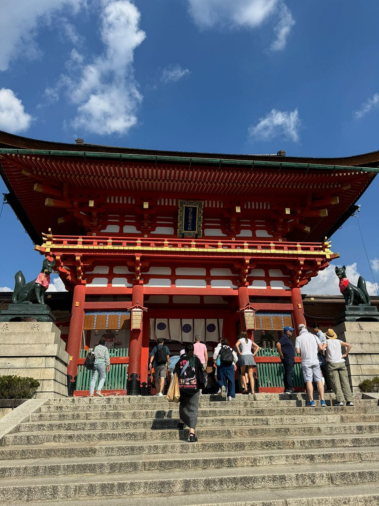
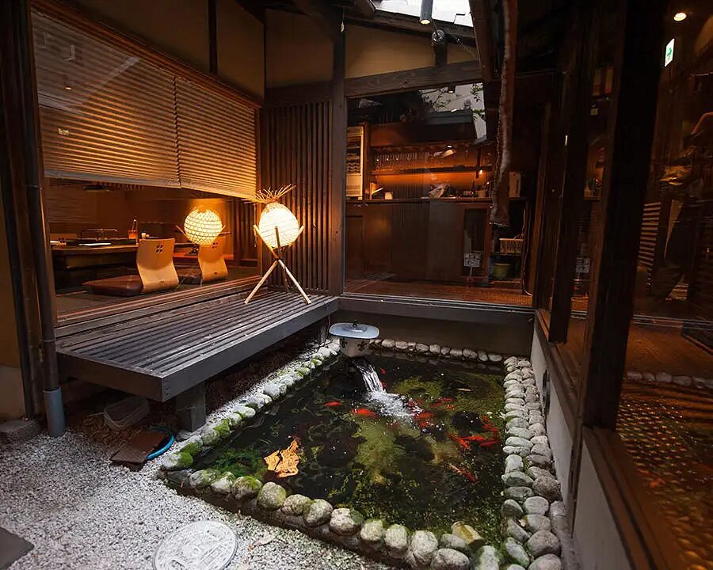
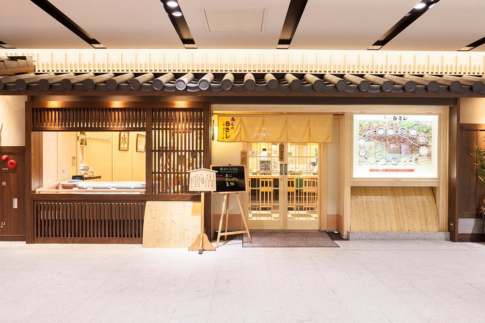
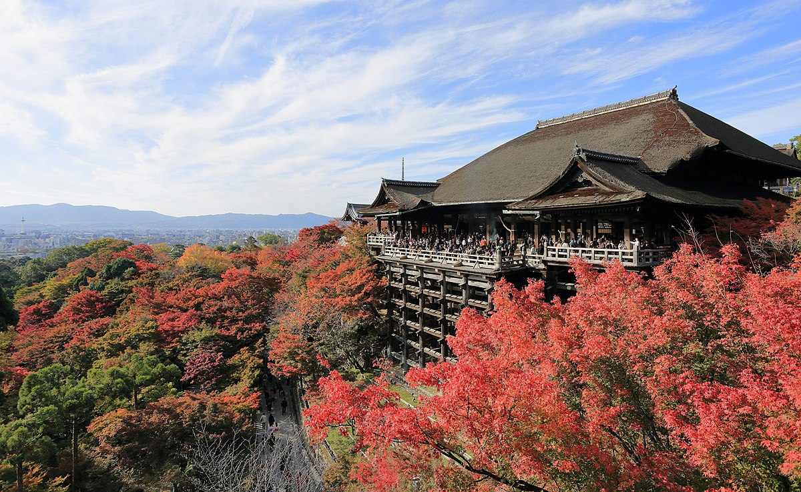

Pontos de Interesse:
Experiencia Samurai

Pavilhão de Ouro Kinkaku-ji

Santuario Fushimi Inari
Top 5 Restaurantes:

1. Teppanyaki Niyama Kiyamachi

2. Premium Pound Gion

3. Matsuzakagyu

4. Kikyo Sushi

5. Musashi
Locais a não perder:

Statue of Izumo no Okuni
Experiencia Samurai
Pavilhão de Ouro Kinkaku-ji
Santuario Fushimi Inari
Melhor local para tirar uma foto:

Kiyomizu-dera
Melhor Altura para Visitar Kyoto:
| Estação | Mês | Clima | Atrações Principais | Recomendação |
|---|---|---|---|---|
| Primavera | Março - Maio | Ameno, flores de cerejeira | Hanami (floração das cerejeiras) | Altamente recomendado |
| Verão | Junho - Agosto | Quente e úmido | Gion Matsuri (festival de verão) | Recomendado com cautela (muito calor) |
| Outono | Setembro - Novembro | Ameno, folhagem de outono | Momiji (folhas vermelhas) | Altamente recomendado |
| Inverno | Dezembro - Fevereiro | Frio e seco | Templos cobertos de neve | Recomendado para quem gosta de frio |